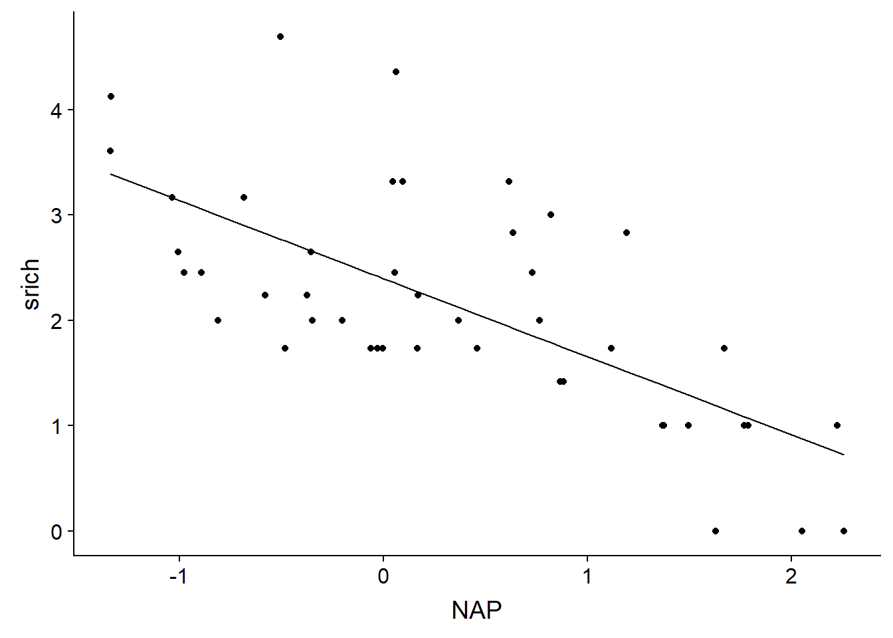
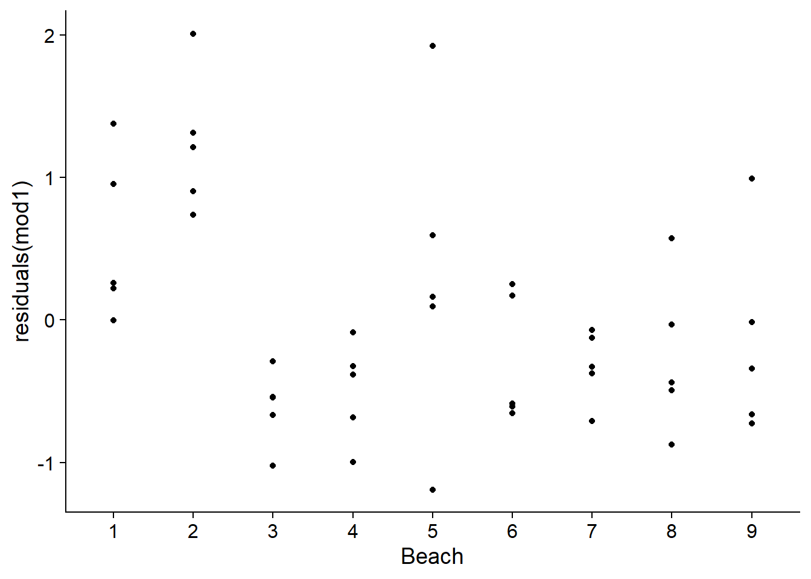
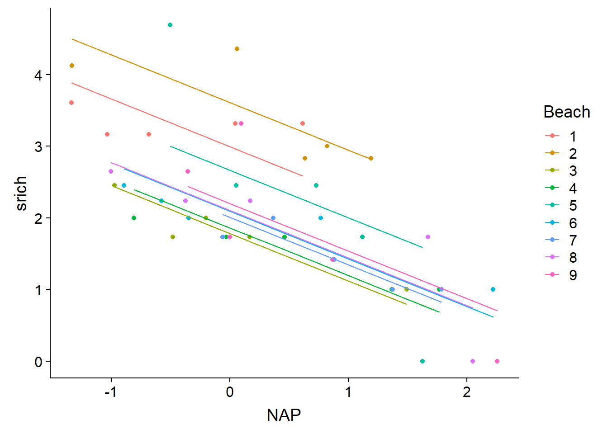
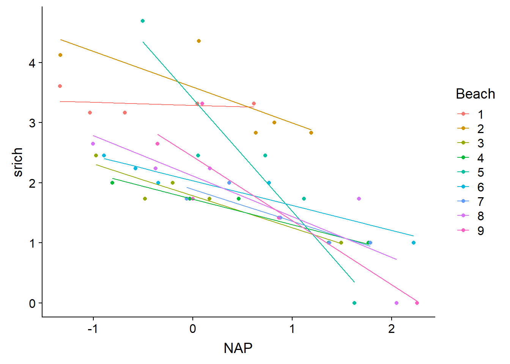
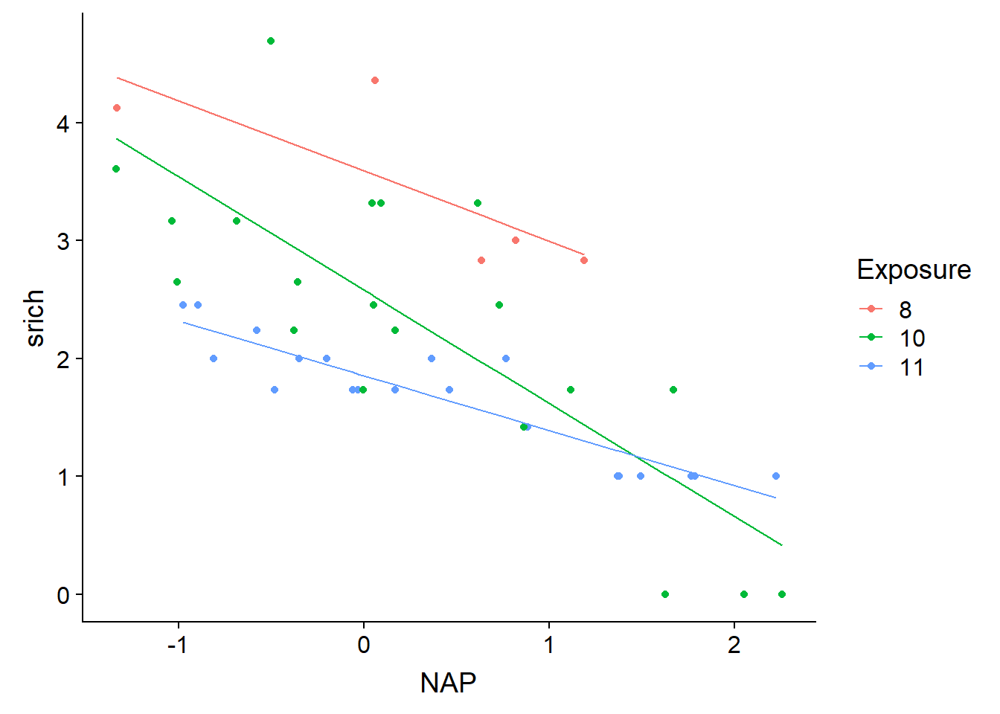
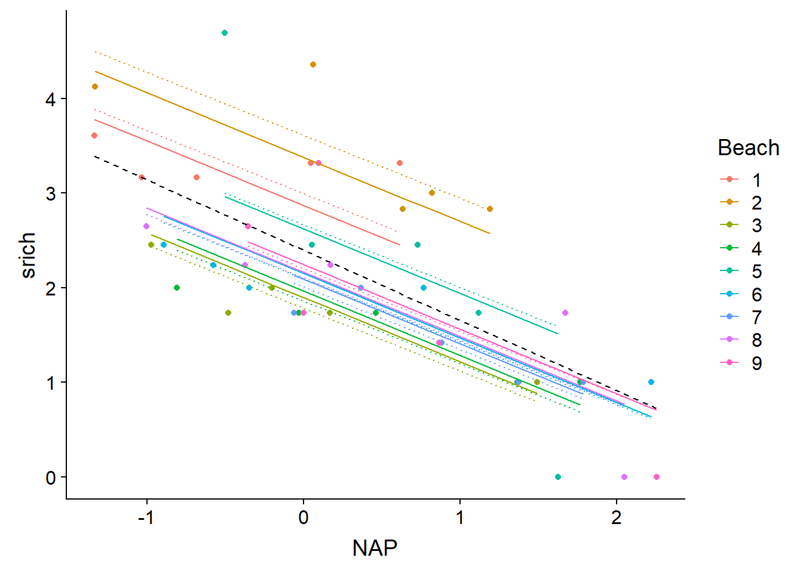

Linear mixed models, part 1
November 19, 2018
Objectives
Apply a linear mixed model to grouped data.
Explain how a mixed model is a compromise between a model ignoring the group effect and a model with fixed group effects.
Determine the situations where it is most beneficial to use a mixed model.
Motivation
Example: Growth of several tree species in a forest
Suppose you need to model tree growth in a mixed forest. You measured the following numeric variables on a sample of 100 trees of different species in a research plot:
- annual growth (response variable);
- diameter (DHP);
- age;
- competition index (IC, based on the number and size of neighboring trees).
For this exercise, you can assume that the variables have been transformed to ensure that the effect of each predictor is linear, and that the random portion of the response follows a normal distribution.
What type of model would you use to represent the relationship between annual growth and the three predictors?
If the mean growth depends on the species, how do you include this effect in your model?
If the effect of the numerical predictors on growth depends on the species, how do you include this effect in your model?
Do the methods proposed in (b) and (c) work best with few species (e.g. 100 trees divided into 2 species) or many species (e.g. 100 trees divided into 20 species)? Do they work better if the number of trees sampled by species is similar (e.g. 5 trees for each of the 20 species) or variable (e.g. 2 to 30 trees depending on the species)?
Can you use this model to predict the growth of a species that is not represented in your sample of 100 trees?
Suppose now that you know some characteristics of each species that could explain the differences between species, for example:
- the degree of shade tolerance (categorical variable);
- the specific leaf area (SLA, numerical variable).
How can you include these features in your model?
Does the model proposed in (a) work better with few species or many species?
Can you use this model to predict the growth of a species that is not represented in your sample of 100 trees?
Finally, suppose you measured growth and other individual predictors on the same 100 trees for three consecutive years.
How could you add year-to-year growth variation in your model? Would it be useful to add meteorological variables of the site (e.g. mean temperature) to explain this interannual variation?
From a statistical point of view, does measuring the same trees each year influence the accuracy of the regression conclusions?
Example: Benthic fauna in the Netherlands
The rikz.csv dataset, taken from the textbook by Zuur et al. (see references at the bottom of this page), presents data on the benthic communities of 9 beaches in the Netherlands. Species richness was measured for 5 sites on each of the 9 beaches for a total of 45 observations. The NAP variable measures the vertical position of each site relative to mean sea level, while the exposure index (Exposure) is measured at the beach scale.
rikz <- read.csv("../donnees/rikz.csv")
# Correct the representation of categorical variables
rikz <- mutate(rikz, Beach = as.factor(Beach),
Exposure = as.factor(Exposure))
head(rikz)## Sample Richness Exposure NAP Beach
## 1 1 11 10 0.045 1
## 2 2 10 10 -1.036 1
## 3 3 13 10 -1.336 1
## 4 4 11 10 0.616 1
## 5 5 10 10 -0.684 1
## 6 6 8 8 1.190 2Since the response is a number of species, a Poisson regression might be more appropriate. However, we will not cover generalized linear mixed models in this class. Therefore, we apply a square root transformation to the response to use linear regression. This transformation generally improves the homogeneity of variance for count data.
rikz <- mutate(rikz, srich = sqrt(Richness))From these data, we will illustrate different strategies to account for the grouped nature of the data (9 beaches) and the group-level predictor (exposure index).
Model 1: Ignore groups
The first model includes only the site-level predictor (NAP), with an adjusted \(R^2\) = 0.46. The effect of this predictor is significant and indicates that the higher sites have a lower species richness.
mod1 <- lm(srich ~ NAP, rikz)
summary(mod1)##
## Call:
## lm(formula = srich ~ NAP, data = rikz)
##
## Residuals:
## Min 1Q Median 3Q Max
## -1.1898 -0.5874 -0.1233 0.2603 2.0089
##
## Coefficients:
## Estimate Std. Error t value Pr(>|t|)
## (Intercept) 2.3952 0.1241 19.295 < 2e-16 ***
## NAP -0.7409 0.1190 -6.224 1.72e-07 ***
## ---
## Signif. codes: 0 '***' 0.001 '**' 0.01 '*' 0.05 '.' 0.1 ' ' 1
##
## Residual standard error: 0.7851 on 43 degrees of freedom
## Multiple R-squared: 0.474, Adjusted R-squared: 0.4617
## F-statistic: 38.74 on 1 and 43 DF, p-value: 1.724e-07Here is the line representing model predictions as a function of NAP.
rikz$fit1 <- fitted(mod1)
ggplot(rikz, aes(x = NAP, y = srich)) +
geom_point() +
geom_line(aes(y = fit1))
Linear regression assumes that residuals are independent from one observation to another. This is not the case here, since the 5 sites of the same beach are more similar compared to the sites of different beaches.
ggplot(rikz, aes(x = Beach, y = residuals(mod1))) +
geom_point()
Model 2: Estimation of coefficients for each group
By adding the Beach factor, this model can estimate systematic differences in species richness between beaches.
mod2 <- lm(srich ~ NAP + Beach, rikz)
summary(mod2)##
## Call:
## lm(formula = srich ~ NAP + Beach, data = rikz)
##
## Residuals:
## Min 1Q Median 3Q Max
## -1.58544 -0.28653 -0.06544 0.23657 1.69043
##
## Coefficients:
## Estimate Std. Error t value Pr(>|t|)
## (Intercept) 2.99457 0.26711 11.211 3.92e-13 ***
## NAP -0.66410 0.09655 -6.878 5.49e-08 ***
## Beach2 0.61544 0.37909 1.623 0.11346
## Beach3 -1.21158 0.37491 -3.232 0.00268 **
## Beach4 -1.13596 0.38510 -2.950 0.00564 **
## Beach5 -0.32863 0.38648 -0.850 0.40093
## Beach6 -0.90219 0.37835 -2.385 0.02265 *
## Beach7 -0.98741 0.39419 -2.505 0.01705 *
## Beach8 -0.89080 0.38392 -2.320 0.02628 *
## Beach9 -0.79350 0.38561 -2.058 0.04712 *
## ---
## Signif. codes: 0 '***' 0.001 '**' 0.01 '*' 0.05 '.' 0.1 ' ' 1
##
## Residual standard error: 0.5882 on 35 degrees of freedom
## Multiple R-squared: 0.7596, Adjusted R-squared: 0.6978
## F-statistic: 12.29 on 9 and 35 DF, p-value: 1.744e-08This model amounts to estimating a different intercept for each group: the Intercept is the mean of srich for Beach 1 when NAP = 0 (at mean sea level), the value of Beach2 is the difference in means between beaches 2 and 1, etc.
The adjusted \(R^2\) increased to 0.70 for this model. Here are its prediction lines superimposed to the data.
rikz$fit2 <- fitted(mod2)
ggplot(rikz, aes(x = NAP, y = srich, color = Beach)) +
geom_point() +
geom_line(aes(y = fit2))
A more flexible model would allow the effect of the NAP (the slope of the line) to vary from one beach to another, by adding the interaction between NAP and Beach.
mod2_inter <- lm(srich ~ NAP * Beach, rikz)
summary(mod2_inter)##
## Call:
## lm(formula = srich ~ NAP * Beach, data = rikz)
##
## Residuals:
## Min 1Q Median 3Q Max
## -0.84831 -0.16080 -0.03091 0.14909 0.98737
##
## Coefficients:
## Estimate Std. Error t value Pr(>|t|)
## (Intercept) 3.28835 0.24259 13.555 1.45e-13 ***
## NAP -0.05077 0.28172 -0.180 0.858319
## Beach2 0.30239 0.32158 0.940 0.355394
## Beach3 -1.50542 0.31542 -4.773 5.61e-05 ***
## Beach4 -1.56073 0.33715 -4.629 8.25e-05 ***
## Beach5 0.11078 0.35432 0.313 0.756947
## Beach6 -1.25466 0.31812 -3.944 0.000513 ***
## Beach7 -1.39537 0.41116 -3.394 0.002144 **
## Beach8 -1.17907 0.32697 -3.606 0.001242 **
## Beach9 -0.85912 0.33879 -2.536 0.017314 *
## NAP:Beach2 -0.54313 0.36261 -1.498 0.145780
## NAP:Beach3 -0.47943 0.37104 -1.292 0.207267
## NAP:Beach4 -0.37552 0.35511 -1.057 0.299666
## NAP:Beach5 -1.82561 0.38805 -4.705 6.74e-05 ***
## NAP:Beach6 -0.36229 0.33258 -1.089 0.285636
## NAP:Beach7 -0.48212 0.41379 -1.165 0.254155
## NAP:Beach8 -0.62429 0.32975 -1.893 0.069089 .
## NAP:Beach9 -1.01278 0.35527 -2.851 0.008256 **
## ---
## Signif. codes: 0 '***' 0.001 '**' 0.01 '*' 0.05 '.' 0.1 ' ' 1
##
## Residual standard error: 0.4508 on 27 degrees of freedom
## Multiple R-squared: 0.8911, Adjusted R-squared: 0.8225
## F-statistic: 13 on 17 and 27 DF, p-value: 7.079e-09The adjusted \(R^2\) increased to 0.82, but this model has 17 adjustable parameters for only 45 observations. According to the AICc, the model without interaction is the best compromise between complexity and good fit.
library(AICcmodavg)
aictab(list(mod1 = mod1, mod2 = mod2, mod2_inter = mod2_inter))##
## Model selection based on AICc:
##
## K AICc Delta_AICc AICcWt Cum.Wt LL
## mod2 11 98.64 0.00 0.8 0.8 -34.32
## mod2_inter 19 101.41 2.77 0.2 1.0 -16.50
## mod1 3 110.47 11.82 0.0 1.0 -51.94Here are the prediction lines of the model with interaction. This model is almost equivalent to performing a separate linear regression for each group, except that the residual variance must be the same for all groups. Each line is estimated from only 5 observations, so it is likely that the model exaggerates the differences between beaches (overfitting).
rikz$fit2i <- fitted(mod2_inter)
ggplot(rikz, aes(x = NAP, y = srich, color = Beach)) +
geom_point() +
geom_line(aes(y = fit2i))
Model 3: Group-level predictor
Rather than estimating mean species richness and/or the relationship between richness and NAP separately for each beach (as in the previous model), we could instead try to explain these differences based on predictors measured at the beach level.
The following model assumes that the (transformed) richness is a function of the interaction between NAP (defined by site) and the exposure index defined by beach.
mod3 <- lm(srich ~ NAP * Exposure, rikz)
summary(mod3)##
## Call:
## lm(formula = srich ~ NAP * Exposure, data = rikz)
##
## Residuals:
## Min 1Q Median 3Q Max
## -1.01561 -0.26022 -0.07632 0.18031 1.62592
##
## Coefficients:
## Estimate Std. Error t value Pr(>|t|)
## (Intercept) 3.5907 0.2641 13.597 < 2e-16 ***
## NAP -0.5939 0.2856 -2.079 0.04420 *
## Exposure10 -1.0101 0.2950 -3.424 0.00146 **
## Exposure11 -1.7375 0.2976 -5.839 8.68e-07 ***
## NAP:Exposure10 -0.3680 0.3113 -1.182 0.24429
## NAP:Exposure11 0.1281 0.3140 0.408 0.68549
## ---
## Signif. codes: 0 '***' 0.001 '**' 0.01 '*' 0.05 '.' 0.1 ' ' 1
##
## Residual standard error: 0.5639 on 39 degrees of freedom
## Multiple R-squared: 0.7538, Adjusted R-squared: 0.7223
## F-statistic: 23.88 on 5 and 39 DF, p-value: 6.417e-11Note that it is not enough to check the coefficients to see if the interaction is significant, rather we must look at the ANOVA table.
anova(mod3)## Analysis of Variance Table
##
## Response: srich
## Df Sum Sq Mean Sq F value Pr(>F)
## NAP 1 23.8787 23.8787 75.0869 1.255e-10 ***
## Exposure 2 11.6166 5.8083 18.2643 2.527e-06 ***
## NAP:Exposure 2 2.4831 1.2416 3.9041 0.02848 *
## Residuals 39 12.4026 0.3180
## ---
## Signif. codes: 0 '***' 0.001 '**' 0.01 '*' 0.05 '.' 0.1 ' ' 1Here, the interaction is significant even if the model’s coefficients for NAP: Exposure10 and NAP: Exposure11 are not. These coefficients only indicate the difference between the slopes of srich vs. NAP for exposure levels 10 vs. 8 (in the first case) or 11 vs. 8 (in the second case). It is possible that the most significant difference is between 10 and 11, as suggested by the prediction lines.
rikz$fit3 <- fitted(mod3)
ggplot(rikz, aes(x = NAP, y = srich, color = Exposure)) +
geom_point() +
geom_line(aes(y = fit3))
Compared to the previous model, this approach is not only more parsimonious (fewer parameters to fit), but it also allows us to explain the differences between beaches according to environmental parameters. We could therefore apply the predictions of the model to other beaches as long as we know their exposure index.
In this case, it appears that the exposure index accounts for much of the variation between groups. However, how could we include differences that remain between groups after controlling for the effect of this index?
In a classical linear regression context, it is not possible to include both a categorical variable indicating the group and a group-level predictor. In the following example, since the mean differences in richness between beaches (after controlling for the effect of the NAP) are fully taken into account by the Beach factor, there is no variation left for the Exposure variable to explain.
mod_exp_beach <- lm(srich ~ NAP + Beach + Exposure, rikz)
summary(mod_exp_beach)##
## Call:
## lm(formula = srich ~ NAP + Beach + Exposure, data = rikz)
##
## Residuals:
## Min 1Q Median 3Q Max
## -1.58544 -0.28653 -0.06544 0.23657 1.69043
##
## Coefficients: (2 not defined because of singularities)
## Estimate Std. Error t value Pr(>|t|)
## (Intercept) 2.99457 0.26711 11.211 3.92e-13 ***
## NAP -0.66410 0.09655 -6.878 5.49e-08 ***
## Beach2 0.61544 0.37909 1.623 0.11346
## Beach3 -1.21158 0.37491 -3.232 0.00268 **
## Beach4 -1.13596 0.38510 -2.950 0.00564 **
## Beach5 -0.32863 0.38648 -0.850 0.40093
## Beach6 -0.90219 0.37835 -2.385 0.02265 *
## Beach7 -0.98741 0.39419 -2.505 0.01705 *
## Beach8 -0.89080 0.38392 -2.320 0.02628 *
## Beach9 -0.79350 0.38561 -2.058 0.04712 *
## Exposure10 NA NA NA NA
## Exposure11 NA NA NA NA
## ---
## Signif. codes: 0 '***' 0.001 '**' 0.01 '*' 0.05 '.' 0.1 ' ' 1
##
## Residual standard error: 0.5882 on 35 degrees of freedom
## Multiple R-squared: 0.7596, Adjusted R-squared: 0.6978
## F-statistic: 12.29 on 9 and 35 DF, p-value: 1.744e-08Thus, we obtain NA values for the coefficients related to the exposure index. Note that the output of this model is identical to that of mod2. If we had written the formula with Exposure before Beach, the model would estimate the effects of the two coefficients of the exposure index, but in return, two of the beach effects would become NA. In terms of predictions, it would be the same model.
An identical problem arises if one tries to model a variation of the slope of srich ~ NAP according to both the exposure index and the beach. That model would be equivalent to mod2_inter above.
mod_exp_beach <- lm(srich ~ NAP * Exposure + NAP * Beach , rikz)
all.equal(fitted(mod_exp_beach), fitted(mod2_inter)) ## [1] TRUEModel 4: Two-step linear model
To solve the problem mentioned at the end of the previous section, we could first estimate the richness differences between beaches from the site-level data, and then model the beach effects according to the exposure index.
For the first step, we use model 2 above (intercept varies by beach), except that we add - 1 to the model formula to force the intercept to be zero. This trick allows us to obtain coefficients for each beach that correspond to the intercept for that beach, rather than a difference measured from a reference level. Note that this trick only works for the first categorical variable in a regression.
mod4_1 <- lm(srich ~ NAP + Beach - 1, rikz)
summary(mod4_1)##
## Call:
## lm(formula = srich ~ NAP + Beach - 1, data = rikz)
##
## Residuals:
## Min 1Q Median 3Q Max
## -1.58544 -0.28653 -0.06544 0.23657 1.69043
##
## Coefficients:
## Estimate Std. Error t value Pr(>|t|)
## NAP -0.66410 0.09655 -6.878 5.49e-08 ***
## Beach1 2.99457 0.26711 11.211 3.92e-13 ***
## Beach2 3.61000 0.26440 13.653 1.39e-15 ***
## Beach3 1.78298 0.26307 6.778 7.41e-08 ***
## Beach4 1.85861 0.26839 6.925 4.78e-08 ***
## Beach5 2.66594 0.26948 9.893 1.12e-11 ***
## Beach6 2.09238 0.26404 7.924 2.55e-09 ***
## Beach7 2.00715 0.27616 7.268 1.73e-08 ***
## Beach8 2.10377 0.26751 7.864 3.04e-09 ***
## Beach9 2.20106 0.26879 8.189 1.20e-09 ***
## ---
## Signif. codes: 0 '***' 0.001 '**' 0.01 '*' 0.05 '.' 0.1 ' ' 1
##
## Residual standard error: 0.5882 on 35 degrees of freedom
## Multiple R-squared: 0.9527, Adjusted R-squared: 0.9392
## F-statistic: 70.48 on 10 and 35 DF, p-value: < 2.2e-16We then create a second dataset containing only the beaches and their exposure index. We use the distinct function of dplyr, which extracts the unique combinations the specified variables from a data frame.
rikz_beach <- distinct(rikz, Beach, Exposure)
rikz_beach## Exposure Beach
## 1 10 1
## 2 8 2
## 3 11 3
## 4 11 4
## 5 10 5
## 6 11 6
## 7 11 7
## 8 10 8
## 9 10 9We then add to this data frame the beach intercepts obtained at step 1, which is the response we want to model at step 2.
rikz_beach$coef <- coef(mod4_1)[-1] # Coefficient 1 is NAP
mod4_2 <- lm(coef ~ Exposure, rikz_beach)
summary(mod4_2)##
## Call:
## lm(formula = coef ~ Exposure, data = rikz_beach)
##
## Residuals:
## Min 1Q Median 3Q Max
## -0.3876 -0.1523 0.0000 0.1571 0.5032
##
## Coefficients:
## Estimate Std. Error t value Pr(>|t|)
## (Intercept) 3.6100 0.3101 11.640 2.42e-05 ***
## Exposure10 -1.1187 0.3467 -3.226 0.01800 *
## Exposure11 -1.6747 0.3467 -4.830 0.00291 **
## ---
## Signif. codes: 0 '***' 0.001 '**' 0.01 '*' 0.05 '.' 0.1 ' ' 1
##
## Residual standard error: 0.3101 on 6 degrees of freedom
## Multiple R-squared: 0.803, Adjusted R-squared: 0.7373
## F-statistic: 12.23 on 2 and 6 DF, p-value: 0.007645One problem with this approach is that each beach is considered a single point at the second step. If the number of samples differed from one beach to another, this model would under-represent the better-sampled beaches. For this case, each beach has the same number of points and the estimated coefficients for the exposure index are very close to those obtained by model 3.
Mixed linear models
Mixed models are conceptually similar to the two-step regression performed above, except that both steps are performed simultaneously to account for the uncertainty of the group effects. This type of model is particularly useful when one or more of the following conditions apply:
the data are grouped or have a hierarchical structure at two or more levels (e.g.: plots grouped by sites grouped by region);
the explanatory variables are also defined at several levels;
the number of groups is too large, or the number of observations in some groups is too small, to estimate a separate effect for each group;
there is more interest in variation between groups than in the effect of particular groups;
we want to apply the model to new groups not represented in the data.
Mathematical representation of a linear mixed model
A linear mixed model is a linear regression where one or more of the coefficients vary from one group of observations to another, and where this variation is modeled by a statistical distribution. They are also known as hierarchical or multilevel models because they model the variation at least at two levels (individual and group of observations).
We will start by dealing with mixed models where only the intercept varies by group. For that type of model, the mean value of the response for observation \(k\) (\(\hat{y_k}\)) is the linear combination of the predictors \(x_1\), \(x_2\), and so on, to which we add an intercept specific to the group \(j\) containing observation \(k\): \(\alpha_{j[k]}\). (We use \(\alpha\) rather than \(\beta_0\) for the intercept to simplify the notation a bit.)
\[ \hat{y_k} = \alpha_{j[k]} + \beta_1 x_{1k} + \beta_2 x_{2k} + ...\]
Just like in the linear regression model, the observed \(y_k\) follows a normal distribution around its mean. The suffix \(y\) has been added to \(\sigma\) to specify that it is the standard deviation of the \(y\).
\[ y_k \sim N(\hat{y_k}, \sigma_y) \]
So far, this model is identical to a linear regression with a categorical variable, if \(\alpha_j\) was the intercept for category \(j\). The particular feature of mixed models is that the \(\alpha_j\) are random values from a normal distribution with a mean \(\mu_\alpha\) and a standard deviation \(\sigma_\alpha\). In other words, the observed groups are part of a “population” of possible groups and we wish to estimate the mean and the variance of \(\alpha\) in that population.
\[ \alpha_{j} \sim N(\mu_\alpha, \sigma_\alpha) \]
The group effect \(\alpha_j\) is called a random effect, as opposed to fixed effects that are independently estimated without originating from a common distribution (for example, the \(m - 1\) coefficients of a factor of \(m\) categories in a classical linear regression). This model is called mixed because it contains both fixed effects (the \(\beta\) associated with predictors \(x_1\), \(x_2\), etc.) and random effects.
There is no particular reason for choosing a normal distribution for \(\alpha_j\). However, if all that is known of a variable is its mean and its standard deviation, the normal distribution is in some sense the most likely, that is, the one that brings the least additional assumptions.
Linear mixed model with R
In this example, we will fit a mixed model of the type shown above to the same data in rikz. The model includes the NAP predictor and an intercept that varies by beach.
To estimate the parameters of a mixed model, we use the lmer function of the lme4 package. The formula for a mixed model resembles those seen before, except for the last term: (1 | Beach). This term means that the intercept (referred to as 1) varies between the levels of the Beach factor.
library(lme4)
mmod <- lmer(srich ~ NAP + (1 | Beach), rikz)
summary(mmod)## Linear mixed model fit by REML ['lmerMod']
## Formula: srich ~ NAP + (1 | Beach)
## Data: rikz
##
## REML criterion at convergence: 97.1
##
## Scaled residuals:
## Min 1Q Median 3Q Max
## -2.5693 -0.4286 -0.1869 0.3230 2.9399
##
## Random effects:
## Groups Name Variance Std.Dev.
## Beach (Intercept) 0.2957 0.5438
## Residual 0.3460 0.5882
## Number of obs: 45, groups: Beach, 9
##
## Fixed effects:
## Estimate Std. Error t value
## (Intercept) 2.37424 0.20405 11.635
## NAP -0.68063 0.09501 -7.163
##
## Correlation of Fixed Effects:
## (Intr)
## NAP -0.162Let’s look at the different components of this result. The first line indicates that the model has been fit with the restricted maximum likelihood (REML) method. Without going into too much detail, the maximum likelihood produces a bias when estimating variances (random effects), and the REML serves to correct that bias.
The random effects block contains the estimates for the variance and standard deviation of the intercept (\(\sigma_\alpha\)), as well as the residual variance and standard deviation (\(\sigma_y\)). The fixed effects block shows the estimate for the mean intercept (\(\mu_\alpha\)) and the effect of the NAP. The summary also indicates the estimated correlation between the two fixed effects. A negative correlation is to be expected when the mean value of the predictor is greater than zero: if the line is rotated around the mean so as to increase the slope, the position of the intercept moves down the \(y\) axis (see diagram below).

Note that lmer does not provide a \(p\)-value for the estimated effects, because unlike the case of a linear model, the exact distribution of these estimates is not known. We can nevertheless obtain approximate confidence intervals with confint.
confint(mmod)## Computing profile confidence intervals ...## 2.5 % 97.5 %
## .sig01 0.2664346 0.9469885
## .sigma 0.4682062 0.7455375
## (Intercept) 1.9537581 2.7916024
## NAP -0.8729868 -0.4948024The effect of the NAP is therefore significant with a threshold of \(\alpha = 0.05\). In this table, .sig01 is \(\sigma_\alpha\) and .sigma is \(\sigma_y\). Standard deviations must be positive. A value less than or equal to zero for a standard deviation or its confidence interval indicates that the model is incorrectly specified.
We can separately extract the fixed and random effects of the model with the fixef andranef functions.
fixef(mmod)## (Intercept) NAP
## 2.3742423 -0.6806307ranef(mmod)## $Beach
## (Intercept)
## 1 0.4962684
## 2 1.0050818
## 3 -0.4791252
## 4 -0.4104708
## 5 0.2444787
## 6 -0.2252788
## 7 -0.2858167
## 8 -0.2124511
## 9 -0.1326862The random effects are the estimates of the difference between the intercept of each beach (1 to 9) and their mean given by (Intercept). The estimated intercept for beach 1 is 2.37 + 0.50 = 2.87 and so on. Instead of calculating these values for each beach, we can get them with the coef function.
coef(mmod)## $Beach
## (Intercept) NAP
## 1 2.870511 -0.6806307
## 2 3.379324 -0.6806307
## 3 1.895117 -0.6806307
## 4 1.963772 -0.6806307
## 5 2.618721 -0.6806307
## 6 2.148964 -0.6806307
## 7 2.088426 -0.6806307
## 8 2.161791 -0.6806307
## 9 2.241556 -0.6806307
##
## attr(,"class")
## [1] "coef.mer"The result of this function gives us the coefficients of the linear regression by group. Our model does not include random effects on the coefficient of NAP, so it is constant for all groups.
What is the difference between these estimated effects for each beach and those of a classical linear model where the Beach categorical variable was specified as a fixed effect? Let’s compare the prediction lines of the mixed model (solid lines) with those of model 2 seen above (lm(srich ~ NAP + Beach), dotted lines). We also add the line corresponding to model 1 which ignores the differences between beaches (dashed black line).
rikz$fitmm <- fitted(mmod)
ggplot(rikz, aes(x = NAP, y = srich, color = Beach)) +
geom_point() +
geom_line(aes(y = fit1), color = "black", linetype = "dashed") +
geom_line(aes(y = fit2), linetype = "dotted") +
geom_line(aes(y = fitmm))
Predictions of the mixed model for each beach are shifted towards the overall mean. This effect is more pronounced as one moves away from the mean (see for example beach 2 at the top of the graph). In statistics, this is called a shrinkage of the group effects.
Mixed models as a compromise between underfitting and overfitting
What is happening here? Assuming that the effects of each beach come from a common distribution, the mixed model estimates the intercept of each beach by taking into account not only the values measured at that beach, but also those of the other beaches. It is therefore a compromise between underfitting (e.g. model 1, which totally ignores differences between beaches) and overfitting (e.g. model 2, which independently estimates the mean intercept for each beach based on its 5 sites).
In other words, the differences between the mean values measured by group can be due either to real differences in the response between the groups, or to random sampling. The ANOVA we saw earlier in this semester would ask whether these differences between groups of observations are too large to be due to chance. The mixed model attempts instead to estimate the portion of observed differences that is due to a real group effect and the portion that is due to random sampling in each group.
Diagnostic plots
The plot function applied to a mixed model output only produces on graph, that of residuals vs. fitted values.
plot(mmod)
To reproduce the quantile-quantile plot of residuals, we can call the qqnorm andqqline functions. This graph shows that the most extreme residuals are further from the mean than those predicted by the normal distribution.
qqnorm(residuals(mmod))
qqline(residuals(mmod))
In a mixed model, group effects are also assumed to follow a normal distribution. We test this assumption with a quantile-quantile plot of random effects (ranef).
beach_coef <- ranef(mmod)$Beach
qqnorm(beach_coef$`(Intercept)`)
qqline(beach_coef$`(Intercept)`)
Even with just 9 points, it is obvious that differences between beaches are not normally distributed.
Note that the influence measures of observations such as Cook distance do not apply to mixed models.
Mixed model with group-related predictor
At the end of the previous section, we saw that the differences between each beach and the overall mean do not follow a normal distribution. Could some of that variation be explained by the exposure index measured at the beach level?
To include the effect of a group-level predictor, we need to modify the model from the previous section. The group-level intercept was defined by a normal distribution:
\[ \alpha_{j} \sim N(\mu_\alpha, \sigma_\alpha) \]
In this case, \(\mu_\alpha\) is not a constant, but varies linearly with the predictor \(u_1\).
\[ \mu_\alpha = \gamma_0 + \gamma_1 u_1 \]
It is therefore a two-level regression model, where \(u_1\) is a group-level predictor and \(\gamma_1\) is the coefficient of that predictor. From a conceptual point of view, it is useful to differentiate group-level and individual-level predictors. However, we could also rewrite the model to separate the fixed effects (at both levels) and the random effects (which have a mean of 0), for example:
\[ y_k = \gamma_0 + \gamma_1 u_{1j[k]} + \beta_1 x_{1k} + \beta_2 x_{2k} + \nu_{j[k]} + \epsilon_k \]
In this representation, the value \(y_k\) of observation \(k\) depends on the intercept \(\gamma_0\), a group-level predictor \(u_1\), two individual-level predictors (\(x_1\), \(x_2\)). The last two terms respectively represent the random variation for group \(j\) and observation \(k\):
\[ \nu_j \sim N(0, \sigma_\alpha) \] \[ \epsilon_k \sim N(0, \sigma_y) \]
We can think of \(\nu_j\) as the part of the residual that is shared by all the observations of group \(j\), while \(\epsilon\) is an independent residual from one observation to another. To fit this model in R, we simply add the predictor to the formula in lmer. The estimate works without the need to explicitly tell R that the value of this variable is the same for all observations in a group.
mmod_exp <- lmer(srich ~ NAP + Exposure + (1 | Beach), rikz)
summary(mmod_exp)## Linear mixed model fit by REML ['lmerMod']
## Formula: srich ~ NAP + Exposure + (1 | Beach)
## Data: rikz
##
## REML criterion at convergence: 86
##
## Scaled residuals:
## Min 1Q Median 3Q Max
## -2.38707 -0.48281 -0.07465 0.47962 3.03495
##
## Random effects:
## Groups Name Variance Std.Dev.
## Beach (Intercept) 0.02315 0.1521
## Residual 0.34658 0.5887
## Number of obs: 45, groups: Beach, 9
##
## Fixed effects:
## Estimate Std. Error t value
## (Intercept) 3.62081 0.30510 11.867
## NAP -0.70349 0.09107 -7.724
## Exposure10 -1.11766 0.33998 -3.287
## Exposure11 -1.66923 0.34021 -4.907
##
## Correlation of Fixed Effects:
## (Intr) NAP Exps10
## NAP -0.082
## Exposure10 -0.891 -0.007
## Exposure11 -0.888 -0.037 0.800Some notes on this result:
The estimate of \(\sigma_\alpha\) (0.15) has decreased compared to its value in the previous model (0.54), showing that the predictor explains a good amount of the variation observed between the groups. The standard deviation of individual observations (0.59) has not changed, which is expected because a group-level predictor cannot explain the differences between observations of the same group.
Correlations between the fixed effects (Intercept), Exposure10, and Exposure11 are to be expected. With the default contrasts in R,
(Intercept)is the intercept for the reference level of the variable (Exposure = 8),Exposure10is the difference between levels 10 and 8, andExposure11is the difference between levels 11 and 8. So, if the estimate of the mean for level 8 increases, the two differences (10 - 8 and 11 - 8) decrease.
Note that after taking into account the effect of the exposure index, the random group effects are closer to a normal distribution.
beach_coef <- ranef(mmod_exp)$`Beach`
qqnorm(beach_coef$`(Intercept)`)
qqline(beach_coef$`(Intercept)`)
Intra-class correlation
In the mixed models presented above, \(\sigma_\alpha\) represents the standard deviation of the mean response between groups while \(\sigma_y\) represents the standard deviation of the response between observations of the same group.
The intra-class correlation is defined as the ratio:
\[ \frac{\sigma_\alpha^2}{\sigma_\alpha^2 + \sigma_y^2} \]
This ratio approaches 0 if \(\sigma_y \gg \sigma_\alpha\) (the variation between groups is negligible compared to the variation between individuals of the same group) and approaches 1 if \(\sigma_\alpha \gg \sigma_y\) (almost all the variation is due to differences between groups).
The intra-class correlation is about 0.45 for the first model (mmod) and decreases to 0.06 taking into account the exposure index (model mmod_exp).
From a practical point of view, the intra-class correlation indicates which scale contributes more to the variation of the response, so at which scale we could sample more to reduce the uncertainty of the model. In our example, if this correlation was close to 1, it would be better to sample multiple beaches with few samples per beach; if not, we could get a larger sample over a limited number of beaches. Of course, this assumes that the beaches observed so far are representative of the “population” of beaches that interest us.
Mixed models for unbalanced groups
In the previous example, the number of observations was balanced between the groups (9 groups of 5 observations). Mixed models also have interesting properties for cases where groups do not contain the same number of observations, as we will see in the next example.
Example: House radon concentration in Minnesota
The dataset radon.csv, from the textbook by Gelman and Hill, contains radon concentration measurements (log_radon, on a logarithmic scale) from 919 houses in 85 counties (county) of the American state of Minnesota. The number of houses sampled per county ranges from 1 to 116. This dataset includes a house-level predictor, the floor where the measurement was taken (with 0 = basement and 1 = ground floor), and a county-level predictor, the soil uranium level (also on a logarithmic scale).
radon <- read.csv("../donnees/radon.csv")
head(radon)## county floor log_uranium log_radon
## 1 AITKIN 1 -0.6890476 0.7884574
## 2 AITKIN 0 -0.6890476 0.7884574
## 3 AITKIN 0 -0.6890476 1.0647107
## 4 AITKIN 0 -0.6890476 0.0000000
## 5 ANOKA 0 -0.8473129 1.1314021
## 6 ANOKA 0 -0.8473129 0.9162907We estimate the parameters of a mixed model with fixed effects of the floor and uranium level, as well as a random variation of the intercept by county.
mm_radon <- lmer(log_radon ~ floor + log_uranium + (1 | county), radon)
summary(mm_radon)## Linear mixed model fit by REML ['lmerMod']
## Formula: log_radon ~ floor + log_uranium + (1 | county)
## Data: radon
##
## REML criterion at convergence: 2134.2
##
## Scaled residuals:
## Min 1Q Median 3Q Max
## -4.9673 -0.6117 0.0274 0.6555 3.3848
##
## Random effects:
## Groups Name Variance Std.Dev.
## county (Intercept) 0.02446 0.1564
## Residual 0.57523 0.7584
## Number of obs: 919, groups: county, 85
##
## Fixed effects:
## Estimate Std. Error t value
## (Intercept) 1.46576 0.03794 38.633
## floor -0.66824 0.06880 -9.713
## log_uranium 0.72027 0.09176 7.849
##
## Correlation of Fixed Effects:
## (Intr) floor
## floor -0.357
## log_uranium 0.145 -0.009How can fixed effects be interpreted in this model?
(Intercept)is the mean oflog_radoniffloor= 0 (i.e. in a basement) andlog_uranium= 0.flooris the difference oflog_radoniffloorincreases by 1 (i.e. ground floor compared to the basement).log_uraniumis the effect of an increase of one unit oflog_uraniumonlog_radon. In the particular case where the two variables are on a logarithmic scale, this coefficient can be interpreted as a multiplicative effect: a 1% increase in the concentration of uranium in the soil increases the concentration of radon in homes by 0.72%.
Now let’s use the model to predict log_radon for a basement in each county. First, we extract the county name, the uranium concentration and the number of houses per county (that number will be useful later).
comtes <- group_by(radon, county, log_uranium) %>%
summarize(n = n()) %>%
ungroup()Here is the graph of county-level predicted values:
comtes$floor <- 0 # basement
comtes$mm_pred <- predict(mm_radon, comtes)
ggplot(comtes, aes(x = log_uranium, y = mm_pred)) +
geom_point()
These predictions deviate from the mean linear trend based on the estimated intercepts for each county (random effects).
Let’s now compare these predictions to those of two classical linear regressions, one with no county effect or one with fixed effects for each county.
lm_radon1 <- lm(log_radon ~ floor + log_uranium, radon)
lm_radon2 <- lm(log_radon ~ floor + log_uranium + county, radon)
comtes <- mutate(comtes, pred1 = predict(lm_radon1, comtes),
pred2 = predict(lm_radon2, comtes))
ggplot(comtes, aes(x = log_uranium)) +
labs(y = "log_radon") +
geom_line(aes(y = pred1)) +
geom_point(aes(y = pred2), shape = 1) +
geom_point(aes(y = mm_pred))
The line represents the prediction of the model ignorning the county, the filled points indicate the county effects of the mixed model, and the hollow points indicate the fixed effects by county. The predictions of the mixed model are closer to the mean trend, showing the shrinkage of the coefficients for the mixed model.
Now let’s look at the effect of the \(n\), the sample size in each county. For clarity, the two predictions of the same county are connected by a dotted line.
ggplot(comtes, aes(x = log_uranium)) +
labs(y = "log_radon") +
geom_line(aes(y = pred1)) +
geom_point(aes(y = pred2, size = n), shape = 1) +
geom_point(aes(y = mm_pred, size = n)) +
geom_segment(aes(xend = log_uranium, y = mm_pred, yend = pred2),
linetype = "dotted")
This result shows that the smaller the sample size in a county, the more its effect is shrunk towards the mean. In other words, the fewer points in a county, the more the deviation observed between that county and the overall trend is likely to be due to random sampling, and the more the mixed model must “correct” this value by bringing it closer to that of the general trend.
Summary
A linear mixed model (also called a multilevel model) is an extension of linear regression for grouped data, where some of the coefficients vary randomly from one group to another.
In this class, we have seen examples where intercept includes a random effect. In the next class, we’ll see how to add random effects to other coefficients.
A mixed model is a compromise between a linear regression that ignores the group structure and a regression that estimates a separate fixed effect for each group.
To do this, the mixed model corrects the estimation of the effects of each group to bring them closer to the general trend (shrinkage). The smaller the sample in a group, the larger this correction is. For this reason, mixed models are particularly useful when there are a large number of groups and few observations in some groups.
In classical linear regression, one cannot include both a fixed effect per group and a group-level predictor. A mixed model can include both the random effect of groups and an explanatory variable defined at the group level.
References
Here are two great textbooks to consult for more details on mixed or multi-level models.
Gelman, A. and Hill, J. (2006) Data Analysis Using Regression and Multilevel/Hierarchical Models. Cambridge, Cambridge University Press.
Zuur, A.F., Ieno, E.N., Walker, N.J., Saveliev, A.A., Smith, G.M. (2009) Mixed Effects Models and Extensions in Ecology with R. New York, Springer-Verlag.